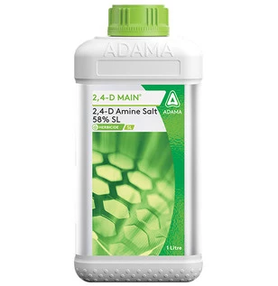

A selective systemic post emergence herbicide
Technical Name: 2,4-D Amine Salt 58% SL
Major Crops: Cereals (e.g., wheat, barley), Maize, Rice, Sugarcane, Turfgrass
Mode of action: 2,4-D Main is absorbed through the leaves and moves systematically throughout the plant, acting as a synthetic auxin (plant hormone). It causes rapid, uncontrolled growth in broad-leaved weeds, leading to their death, while allowing crops to remain largely unaffected.
Target Pest: Pigweed (Amaranthus spp.), Lamb's quarters (Chenopodium album), Field bindweed (Convolvulus arvensis), Tropical spiderwort (Commelina benghalensis), Asthma weed (Euphorbia hirta), Cocklebur (Xanthium strumarium), and Canada thistle (Cirsium arvense).
Presentation Available: 250ml, 500ml, 1ltr.
Company: Adama